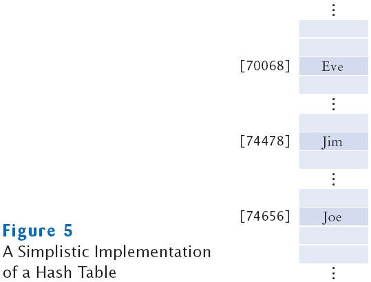
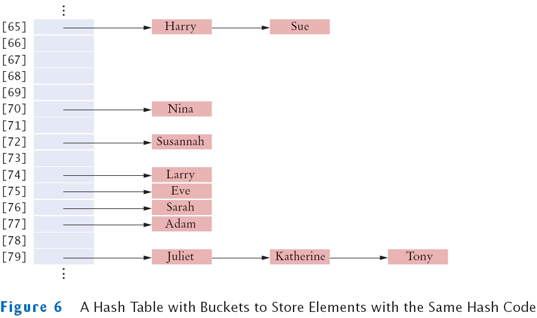
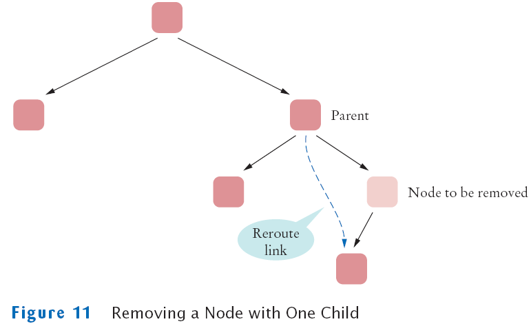

Chapter 21
Advanced Data Structures
Chapter Goals
- To learn about the set and map data types
- To understand the implementation of hash tables
- To be able to program hash functions
- To learn about binary trees
- To be able to use tree sets and tree maps
- To become familiar with the heap data structure
- To learn how to implement the priority queue data type
- To understand how to use heaps for sorting
Sets
- Set: unordered collection of distinct elements
- Elements can be added, located, and removed
- Sets don't have duplicates
A Set of Printers
Fundamental Operations on a Set
- Adding an element
- Adding an element has no effect if the element is already in the set
- Removing an element
- Attempting to remove an element that isn't in the set is silently ignored
- Containment testing (does the set contain a given object?)
- Listing all elements (in arbitrary order)
Sets
- We could use a linked list to implement a set
- Adding, removing, and containment testing would be relatively slow
- There are data structures that can handle these operations much more quickly
- Standard Java library provides set implementations based on both data structures
- Both of these data structures implement the Set interface
Set Classes and Interface in the Standard Library
Iterator
- Use an iterator to visit all elements in a set
- A set iterator does not visit the elements in the order in which they were
inserted
- An element can not be added to a set at an iterator position
- A set element can be removed at an iterator position
Code for Creating and Using a Hash Set
-
//Creating a hash set
Set<String> names = new HashSet<String>();
-
//Adding an element
names.add("Romeo");
-
//Removing an element
names.remove("Juliet");
-
//Is element in set
if (names.contains("Juliet") { . . .}
Listing All Elements with an Iterator
Iterator<String> iter = names.iterator();
while (iter.hasNext())
{
String name = iter.next();
Do something with name
}
// Or, using the "for each" loop
for (String name : names)
{
Do something with name
}
File SetTester.java
Output
Add name, Q when done: Dick
{ Dick }
Add name, Q when done: Tom
{ Tom Dick }
Add name, Q when done: Harry
{ Harry Tom Dick }
Add name, Q when done: Tom
{ Harry Tom Dick }
Add name, Q when done: Q
Remove name, Q when done: Tom
{ Harry Dick }
Remove name, Q when done: Jerry
{ Harry Dick }
Remove name, Q when done: Q
Self Check
- Arrays and lists remember the order in which you added elements; sets do not.
Why would you want to use a set instead of an array or list?
- Why are set iterators different from list iterators?
Answers
- Efficient set implementations can quickly test whether a given element is a
member of the set.
- Sets do not have an ordering, so it doesn't make sense to add an element at a
particular iterator position, or to traverse a set backwards.
Maps
- A map keeps associations between key and value objects
- Mathematically speaking, a map is a function from one set, the key set, to another set, the value set
- Every key in a map has a unique value
- A value may be associated with several keys
- Classes that implement the Map interface
An Example of a Map
Map Classes and Interfaces
Code for Creating and Using a HashMap
-
//Creating a HashMap
Map<String, Color> favoriteColors = new HashMap<String, Color>();
-
//Adding an association
favoriteColors.put("Juliet", Color.PINK);
-
//Changing an existing association
favoriteColor.put("Juliet",Color.RED);
-
//Getting the value associated with a key
Color julietsFavoriteColor = favoriteColors.get("Juliet");
-
//Removing a key and its associated value
favoriteColors.remove("Juliet");
Printing Key/Value Pairs
Set<String> keySet = m.keySet();
for (String key : keySet)
{
Color value = m.get(key);
System.out.println(key + "->" + value);
}
File MapTester.java
Output
Romeo->java.awt.Color[r=0,g=255,b=0]
Eve->java.awt.Color[r=255,g=175,b=175]
Adam->java.awt.Color[r=0,g=0,b=255]
Juliet->java.awt.Color[r=255,g=175,b=175]
Self Check
- What is the difference between a set and a map?
- Why is the collection of the keys of a map a set?
Answers
- A set stores elements. A map stores associations between keys and values.
- The ordering does not matter, and you cannot have duplicates.
Hash Tables
- Hashing can be used to find elements in a data structure quickly without
making a linear search
- A hash table can be used to implement sets and maps
- A hash function computes an integer value (called the hash code) from an
object
- A good hash function minimizes collisions–identical hash codes for
different objects
- To compute the hash code of object x:
int h = x.hashCode();
Sample Strings and Their Hash Codes
| String | Hash Code |
| "Adam" | 2035631 |
| "Eve" | 70068 |
| "Harry" | 69496448 |
| "Jim" | 74478 |
| "Joe" | 74656 |
| "Juliet" | -2065036585 |
| "Katherine" | 2079199209 |
| "Sue" | 83491 |
Simplistic Implementation of a Hash Table
- To implement
- Generate hash codes for objects
- Make an array
- Insert each object at the location of its hash code
- To test if an object is contained in the set
- Compute its hash code
- Check if the array position with that hash code is already occupied
Simplistic Implementation of a Hash Table

Problems with Simplistic Implementation
- It is not possible to allocate an array that is large enough to hold all
possible integer index positions
- It is possible for two different objects to have the same hash code
Solutions
Hash Table with Buckets to Store Elements with Same Hash Code

Algorithm for Finding an Object x in a Hash Table
- Get the index h into the hash table
- Compute the hash code
- Reduce it modulo the table size
- Iterate through the elements of the bucket at position h
- For each element of the bucket, check whether it is equal to x
- If a match is found among the elements of that bucket, then x is in the set
- Otherwise, x is not in the set
Hash Tables
- A hash table can be implemented as an array of buckets
- Buckets are sequences of nodes that hold elements with the same hash code
- If there are few collisions, then adding, locating, and removing hash table
elements takes constant time
- For this algorithm to be effective, the bucket sizes must be small
- The table size should be a prime number larger than the expected number
of elements
- An excess capacity of 30% is typically recommended
Hash Tables
- Adding an element: simple extension of the algorithm for finding an object
- Compute the hash code to locate the bucket in which the element should be inserted
- Try finding the object in that bucket
- If it is already present, do nothing; otherwise, insert it
- Removing an element is equally simple
- Compute the hash code to locate the bucket in which the element should be inserted
- Try finding the object in that bucket
- If it is present, remove it; otherwise, do nothing
- If there are few collisions, adding or removing takes O(1) time
File HashSet.java
File SetTester.java
Output
Harry
Sue
Nina
Susannah
Larry
Eve
Sarah
Adam
Juliet
Katherine
Tony
Self Check
- If a hash function returns 0 for all values, will the HashSet work correctly?
- What does the hasNext method of the HashSetIterator do when it has reached the end of a bucket?
Answers
- Yes, the hash set will work correctly. All elements will be inserted into a single bucket.
- It locates the next bucket in the bucket array and points to its first element.
Computing Hash Codes
- A hash function computes an integer hash code from an object
- Choose a hash function so that different objects are likely to have different
hash codes.
- Bad choice for hash function for a string
Computing Hash Codes
- Hash function for a string s from standard library
final int HASH_MULTIPLIER = 31;
int h = 0;
for (int i = 0; i < s.length(); i++)
h = HASH_MULTIPLIER * h + s.charAt(i)
- For example, the hash code of "eat" is
31 * (31 * 'e' + 'a') + 't' = 100184
- The hash code of "tea" is quite different, namely
31 * (31 * 't' + 'e') + 'a' = 114704
A hashCode Method for the Coin Class
- There are two instance fields: String coin name and double coin value
- Use String's hashCode method to get a hash code for the name
- To compute a hash code for a floating-point number:
- Wrap the number into a Double object
- Then use Double's hashCode method
- Combine the two hash codes using a prime number as the HASH_MULTIPLIER
A hashCode Method for the Coin Class
class Coin
{
public int hashCode()
{
int h1 = name.hashCode();
int h2 = new Double(value).hashCode();
final int HASH_MULTIPLIER = 29;
int h = HASH_MULTIPLIER * h1 + h2:
return h
}
. . .
}
Creating Hash Codes for your Classes
Creating Hash Codes for your Classes
- Your hashCode method must be compatible with the equals
method
- if x.equals(y) then x.hashCode() == y.hashCode()
- You get into trouble if your class defines an equals method but not a hashCode method
- In general, define either both hashCode and equals methods
or neither
Hash Maps
-
In a hash map, only the keys are hashed
- The keys need compatible hashCode
and equals method
File Coin.java
File HashCodeTester.java
Output
hash code of coin1=-1513525892
hash code of coin2=-1513525892
hash code of coin3=-1768365211
Coin[value=0.25,name=quarter]
Coin[value=0.05,name=nickel]
Self Check
- What is the hash code of the string "to"?
- What is the hash code of new Integer(13)?
Answers
- 31 × 116 + 111 = 3707
- 13.
Binary Search Trees
- Binary search trees allow for fast insertion and removal of elements
- They are specially designed for fast searching
- A binary tree consists of two nodes, each of which has two child nodes
- All nodes in a binary search tree fulfill the property that:
- Descendants to the left have smaller data values than the node data
value
- Descendants to the right have larger data values than the node data
value
A Binary Search Tree

A Binary Tree That Is Not a Binary Search Tree
Implementing a Binary Search Tree
- Implement a class for the tree containing a reference to the root node
- Implement a class for the nodes
- A node contains two references (to left and right child nodes)
- A node contains a data field
- The data field has type Comparable, so that you can compare the values
in order to place them in the correct position in the binary search tree
Implementing a Binary Search Tree
public class BinarySearchTree
{
public BinarySearchTree() { . . . }
public void add(Comparable obj) { . . . }
. . .
private Node root;
private class Node
{
public void addNode(Node newNode) { . . . }
. . .
public Comparable data;
public Node left;
public Node right;
}
}
Insertion Algorithm
- If you encounter a non-null node reference, look at its data value
- If the data value of that node is larger than the one you want to insert,
continue the process with the left subtree
- If the existing data value is smaller,
continue the process with the right subtree
- If you encounter a null node pointer, replace it with the new node
Example
BinarySearchTree tree = new BinarySearchTree();
tree.add("Juliet");  tree.add("Tom");
tree.add("Tom");  tree.add("Dick");
tree.add("Dick");  tree.add("Harry");
tree.add("Harry"); 
Example
Example Continued
tree.add("Romeo"); 
Insertion Algorithm: BinarySearchTree Class
public class BinarySearchTree
{
. . .
public void add(Comparable obj)
{
Node newNode = new Node();
newNode.data = obj;
newNode.left = null;
newNode.right = null;
if (root == null) root = newNode;
else root.addNode(newNode);
}
. . .
}
Insertion Algorithm: Node Class
private class Node
{
. . .
public void addNode(Node newNode)
{
int comp = newNode.data.compareTo(data);
if (comp < 0)
{
if (left == null) left = newNode;
else left.addNode(newNode);
}
else if (comp > 0)
{
if (right == null) right = newNode;
else right.addNode(newNode);
}
}
. . .
}
Binary Search Trees
- When removing a node with only one child, the child replaces the node to be removed
- When removing a node with two children, replace it with the smallest node of the right subtree
Removing a Node with One Child

Removing a Node with Two Children
Binary Search Trees
- Balanced tree: each node has approximately as many descendants on the left as on the right
- If a binary search tree is balanced, then adding an element takes O(log(n)) time
- If the tree is unbalanced, insertion can be slow
- Perhaps as slow as insertion into a linked list
An Unbalanced Binary Search Tree
File BinarySearchTree.java
Self Check
- What is the difference between a tree, a binary tree, and a balanced binary tree?
- Give an example of a string that, when inserted into the tree of Figure 10,
becomes a right child of Romeo.
Answers
- In a tree, each node can have any number of children. In a binary tree, a node
has at most two children. In a balanced binary tree, all nodes have approximately
as many descendants to the left as to the right.
- For example, Sarah. Any string between Romeo and Tom will do.
Tree Traversal
- Print the tree elements in sorted order:
- Print the left subtree
- Print the data
- Print the right subtree
Example
- Let's try this out with the tree in Figure 10. The algorithm tells us to
- Print the left subtree of Juliet; that is, Dick and descendants
- Print Juliet
- Print the right subtree of Juliet; that is, Tom and descendants
- How do you print the subtree starting at Dick?
- Print the left subtree of Dick. There is nothing to print
- Print Dick
- Print the right subtree of Dick, that is, Harry
Example
BinarySearchTree Class print Method
public class BinarySearchTree
{
. . .
public void print()
{
if (root != null)
root.printNodes();
}
. . .
}
Node Class printNodes Method
private class Node
{
. . .
public void printNodes()
{
if (left != null)
left.printNodes();
System.out.println(data);
if (right != null)
right.printNodes();
}
. . .
}
Tree Traversal
- Tree traversal schemes include
- Preorder traversal
- Inorder traversal
- Postorder traversal
Preorder Traversal
- Visit the root
- Visit the left subtree
- Visit the right subtree
Inorder Traversal
- Visit the left subtree
- Visit the root
- Visit the right subtree
Postorder Traversal
- Visit the left subtree
- Visit the right subtree
- Visit the root
Tree Traversal
- Postorder traversal of an expression tree yields the instructions for evaluating the expression on a stack-based calculator
- The first tree ((3 + 4) * 5) yields
3 4 + 5 *
- Whereas the second tree (3 + 4 * 5) yields
3 4 5 * +
A Stack-Based Calculator
- A number means:
- Push the number on the stack
- An operator means:
- Pop the top two numbers off the stack
- Apply the operator to these two numbers
- Push the result back on the stack
A Stack-Based Calculator
- For evaluating arithmetic expressions
- Turn the expression into a tree
- Carry out a postorder traversal of the expression tree
- Apply the operations in the given order
- The result is the value of the expression
A Stack-Based Calculator
Self Check
- What are the inorder traversals of the two trees in Figure 14?
- Are the trees in Figure 14 binary search trees?
Answers
- For both trees, the inorder traversal is 3 + 4 * 5.
- No–for example, consider the children of +. Even without looking up the Unicode codes for 3, 4,
and +, it is obvious that + isn't between 3 and 4.
Reverse Polish Notation
Using Tree Sets and Tree Maps
- HashSet and TreeSet both implement the Set interface
- With a good hash function, hashing is generally faster than tree-based algorithms
- TreeSet's balanced tree guarantees reasonable performance
- TreeSet's iterator visits the elements in sorted order rather than the HashSet's
random order
To Use a TreeSet
- Either your objects must implement Comparable interface
- Or you must provide a Comparator object
To Use a TreeMap
- Either the keys must implement the Comparable interface
- Or you must provide a Comparator object for the keys
- There is no requirement for the values
File TreeSetTester.java
Output
Coin[value=0.01,name=penny]
Coin[value=0.05,name=nickel]
Coin[value=0.25,name=quarter]
Self Check
- When would you choose a tree set over a hash set?
- Suppose we define a coin comparator whose compare method always returns 0.
Would the TreeSet function correctly?
Answers
- When it is desirable to visit the set elements in sorted order.
- No–it would never be able to tell two coins apart. Thus, it would think that all
coins are duplicates of the first.
Priority Queues
- A priority queue collects elements, each of which has a priority
- Example: collection of work requests, some of which may be more urgent than others
- When removing an element, element with highest priority is retrieved
- Customary to give low values to high priorities, with priority 1 denoting the highest priority
- Standard Java library supplies a PriorityQueue class
- A data structure called heap is very suitable for implementing priority queues
Example
- Consider this sample code:
PriorityQueue<WorkOrder> q = new PriorityQueue<WorkOrder>;
q.add(new WorkOrder(3, "Shampoo carpets"));
q.add(new WorkOrder(1, "Fix overflowing sink"));
q.add(new WorkOrder(2, "Order cleaning supplies"));
- When calling q.remove() for the first time, the work order with priority 1 is removed
- Next call to q.remove() removes the order with priority 2
Heaps
- A heap (or, a min-heap) is a binary tree with two special properties
- It is almost complete
- All nodes are filled in, except the last level may have some nodes missing toward the right
- The tree fulfills the heap property
- All nodes store values that are at most as large as the values stored in their descendants
- Heap property ensures that the smallest element is stored in the root
An Almost Complete Tree
A Heap

Differences of a Heap with a Binary Search Tree
- The shape of a heap is very regular
- Binary search trees can have arbitrary shapes
- In a heap, the left and right subtrees both store elements that are larger than
the root element
- In a binary search tree, smaller elements are stored in the left subtree and larger elements are stored in the right subtree
Inserting a New Element in a Heap
- Add a vacant slot to the end of the tree
Inserting a New Element in a Heap
- Demote the parent of the empty slot if it is larger than the element to be inserted
- Move the parent value into the vacant slot, and move the vacant slot up
- Repeat this demotion as long as the parent of the vacant slot is larger than the element to be inserted

Inserting a New Element in a Heap
- Demote the parent of the empty slot if it is larger than the element to be inserted
- Move the parent value into the vacant slot, and move the vacant slot up
- Repeat this demotion as long as the parent of the vacant slot is larger than the element to be inserted
Inserting a New Element in a Heap
- At this point, either the vacant slot is at the root, or the parent of the vacant slot is smaller than the element to be inserted.
Insert the element into the vacant slot
Removing an Arbitrary Node from a Heap
- Extract the root node value


Removing an Arbitrary Node from a Heap
- Move the value of the last node of the heap into the root node, and remove the last node.
Heap property may be violated for root node (one or both of its children may be smaller).
Removing an Arbitrary Node from a Heap
- Promote the smaller child of the root node.
Root node again fulfills the heap property. Repeat process with demoted child.
Continue until demoted child has no smaller children. Heap property is now fulfilled again.
This process is called "fixing the heap".


Removing an Arbitrary Node from a Heap
- Promote the smaller child of the root node.
Root node again fulfills the heap property. Repeat process with demoted child.
Continue until demoted child has no smaller children. Heap property is now fulfilled again.
This process is called "fixing the heap".
Heap Efficiency
- Insertion and removal operations visit at most h nodes
- h: Height of the tree
- If n is the number of elements, then

- Thus, insertion and removal operations take O(log(n)) steps
- Heap's regular layout makes it possible to store heap nodes efficiently in an array
Storing a Heap in an Array
File MinHeap.java
File HeapTester.java
File WorkOrder.java
Output
priority=1, description=Fix broken sink
priority=2, description=Order cleaning supplies
priority=3, description=Shampoo carpets
priority=6, description=Replace light bulb
priority=7, description=Empty trash
priority=8, description=Water plants
priority=9, description=Clean coffee maker
priority=10, description=Remove pencil sharpener shavings
Self Check
- The software that controls the events in a user interface keeps the events in a
data structure. Whenever an event such as a mouse move or repaint request
occurs, the event is added. Events are retrieved according to their importance.
What abstract data type is appropriate for this application?
- Could we store a binary search tree in an array so that we can quickly locate the
children by looking at array locations 2 * index and 2 * index + 1?
Answers
- A priority queue is appropriate because we want to get the important events
first, even if they have been inserted later.
- Yes, but a binary search tree isn't almost filled, so there may be holes in the
array. We could indicate the missing nodes with null elements.
The Heapsort Algorithm
- Based on inserting elements into a heap and removing them in sorted order
- This algorithm is an O(n log(n)) algorithm:
- Each insertion and removal is O(log(n))
- These steps are repeated n times, once for each element in the sequence that is to be sorted
The Heapsort Algorithm
- Can be made more efficient
- Start with a sequence of values in an array and "fixing the heap" iteratively
- First fix small subtrees into heaps, then fix larger trees
- Trees of size 1 are automatically heaps
- Begin the fixing procedure with the subtrees whose roots are located in the next-to-lowest level of the tree
- Generalized fixHeap method fixes a subtree with a given root index:
void fixHeap(int rootIndex, int lastIndex)
Turning a Tree into a Heap

Turning a Tree into a Heap

Turning a Tree into a Heap
The Heapsort Algorithm
- After array has been turned into a heap, repeatedly remove the root element
- Swap root element with last element of the tree and then reduce the tree length
- Removed root ends up in the last position of the array, which is no longer needed by the heap
- We can use the same array both to hold the heap (which gets shorter with each step)
and the sorted sequence (which gets longer with each step)
- Use a max-heap rather than a min-heap so that sorted sequence is accumulated in the correct order
Using Heapsort to Sort an Array
File Heapsorter.java
Self Check
- Which algorithm requires less storage, heapsort or mergesort?
- Why are the computations of the left child index and the right child index in the
HeapSorter different than in MinHeap?
Answers
- Heapsort requires less storage because it doesn't need an auxiliary array.
- The MinHeap wastes the 0 entry to make the formulas more intuitive. When sorting
an array, we don't want to waste the 0 entry, so we adjust the formulas
instead.